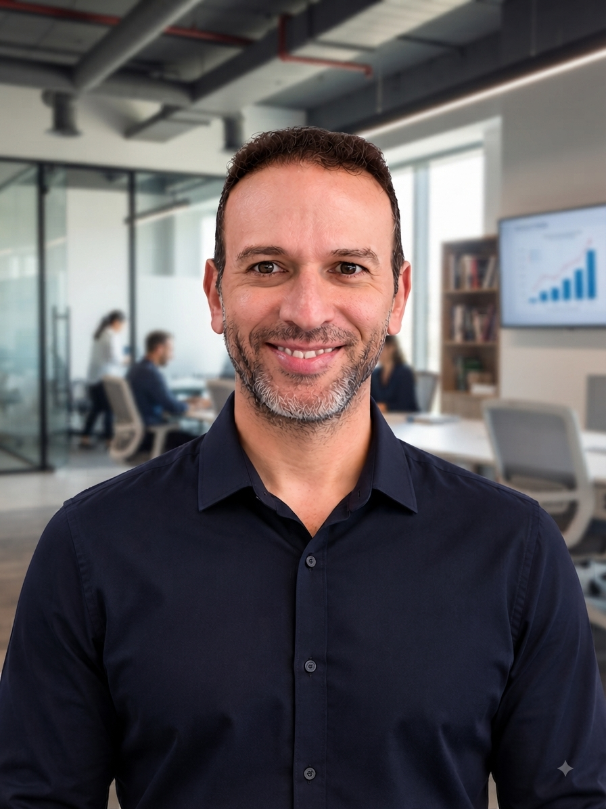

Tech Lead / Arquiteto de Sistemas
Imirim, São Paulo - SP
raphael.garcia.sp@gmail.com
(11) 95701-1179
Competências
Liderança Técnica & Gestão de Times
Arquitetura de Soluções
Open Finance / Open Banking
Oracle / PL-SQL / Banco de Dados
Observabilidade (Grafana, Dynatrace, Kibana)
Idiomas
Português
Inglês (nível intermediário, em andamento)
Dados Pessoais
Brasileiro, 39 anos, Casado
Responsável pelo time técnico, com gestão direta de 5 pessoas, elaboração de OKRs junto ao time de produto e garantia das entregas dentro dos KPIs da área. Gestão de incidentes, problemas, mudanças e demandas, em parceria com Suporte, Desenvolvimento, Processos e Arquitetura. Principais realizações: certificações de segurança e conformidade Open Finance (OpenID e Raidiam API 2.0 Fase 3), dashboards de observabilidade (Grafana, Dynatrace, Zabbix, Kibana/ELK) e migrações tecnológicas (Bitbucket → GitHub, Redis 5 → 6, RabbitMQ → Amazon MQ).
Desenho de soluções técnicas para demandas corporativas, condução do fluxo de mudanças junto à governança e garantia das entregas em cada sprint no modelo ágil Scrum. Principais realizações: implantação da jornada de transmissão Open Finance Fase 2, implantação do produto Empréstimo com Garantia FGTS e ajustes na jornada mobile do Crédito Pessoal Auto.
Responsável pelo fluxo de implantação dos produtos da seguradora, pelo tempo de processamento batch na malha Control-M e pela escalabilidade dos produtos. Principais realizações: implantação dos produtos Prestamista e SCP (Seguro Cartão Protegido), migração do sistema contábil para SAP Converged, migração da base para Oracle 11g e reestruturação da Apólice Específica.
Atuação nos sistemas de Seguros e Financeira, com gestão de projetos, análise funcional e especificações técnicas (DFD), utilizando Forms 6i, Reports 6.0, PL/SQL e Oracle Designer 6i, em módulos como Pagamento de Comissões, Sinistros, Contabilidade, Emissão de Propostas e Cobrança.
Atuação no sistema de faturamento pós-pago (Billing), com criação e melhoria de relatórios, aplicação de regras de negócio (abertura, bloqueio e expiração de contas, ajustes, ciclos de faturamento) e ganhos de performance em stored procedures e scripts SQL agendados no Control-M.
Criação, agendamento, monitoração e tratamento de erros via Control-M for SAP e Workload, garantia da qualidade dos produtos gerados e criação de relatórios operacionais de performance, erros e paradas, com suporte às áreas clientes.
Controle de versão, operacionalização de jobs e monitoramento de backup (NetBackup, Legato, Data Protector). Acompanhamento da malha Control-M nos sistemas de faturamento, Data Warehouse, pré-pago, pós-pago e front office, com monitoramento dos ciclos de faturamento via Control-M e RVS.
Início de carreira em suporte técnico de 1º nível.
Tecnologia em Processamento de Dados
Gerenciamento de Banco de Dados
Certificação em gestão ágil de projetos
Outros treinamentos técnicos: Atita Treinamentos (2016) · CSS3 (2014) · Fundamentos ITIL de Gerenciamento Tecnológico (2010) · PT9 - Performance Tuning Oracle 9i (2008) · AD9B e AD9A - Administração de Banco de Dados Oracle 9i (2007) · PO9 - Desenvolvimento de Objetos com PL/SQL e Procedure Builder (2007) · OR9 - Introdução ao Oracle SQL e Extensões (2007) · Connect Direct, Connect Enterprise e Control Center - Sterling Commerce (2006) · Control-M Basics - BMC Software (2006)
Conheça também meu kit de ferramentas voltado para desenvolvedores: